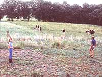

A converted exercise bike serves as a water pump. Five to 10 minutes every other day is usually all that is needed to supply their daily water needs. Right: The Dishwasher in Alice and David's house may have hands, but off-the-grid living still leaves space for several creature comforts.